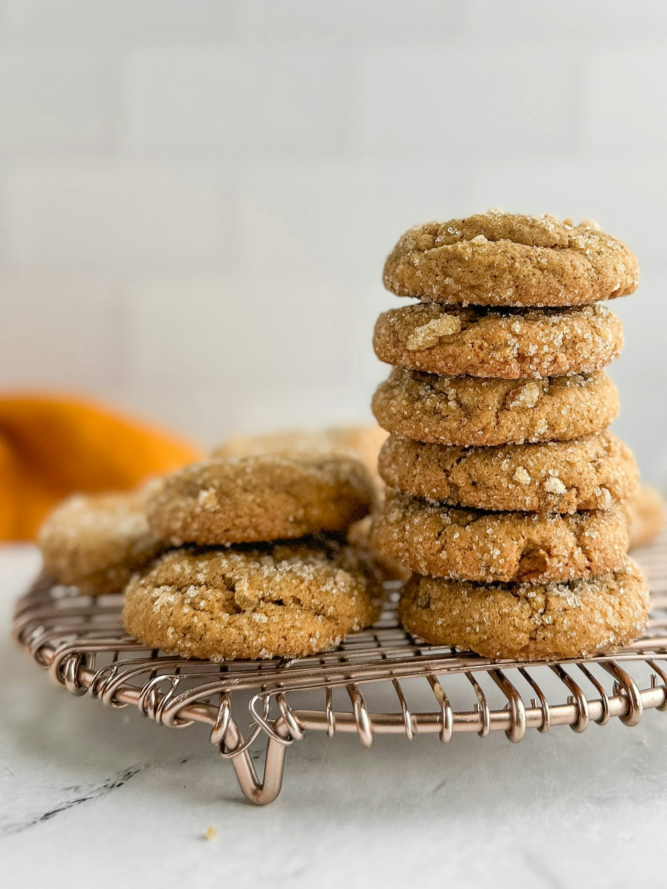

Amazing Ginger Snaps!!

Description
These chewy ginger snaps are so easy to make and are sure to disappear.
Ingredients
- 2 cups all-purpose flour
- 1 cup white sugar
- 2/3 cup canola oil
- 1/4 cup unsulfured/unsulphured molasses
- 1 egg
- 2 tsp baking soda
- 1 tsp ground cinnamon
- 1 tsp ground ginger
- 1/2 tsp salt
- 1/4 cup white sugar, or as needed